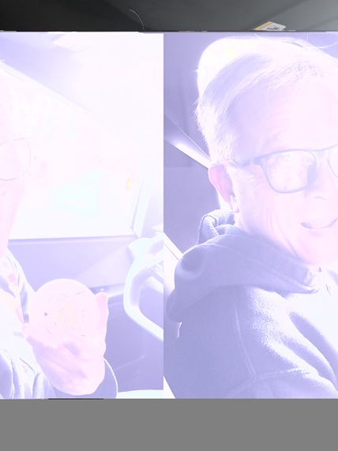

Here I was learning and experimenting about different methods of creating glitch art utilizing text editors and applications such as Audacity to convert and images as audio files. It was pretty fun: I never considered the idea of opening an image in an audio/text editor, changing the sound/text, then reopening the file normally to see what happens. It was a little hard at times since not all photos reacted the same when manipulated, but overall pretty cool. Here I have one that I made, where I took a random photo of my dad and ended up somehow increase the brightness and shifted the layout of the photo.